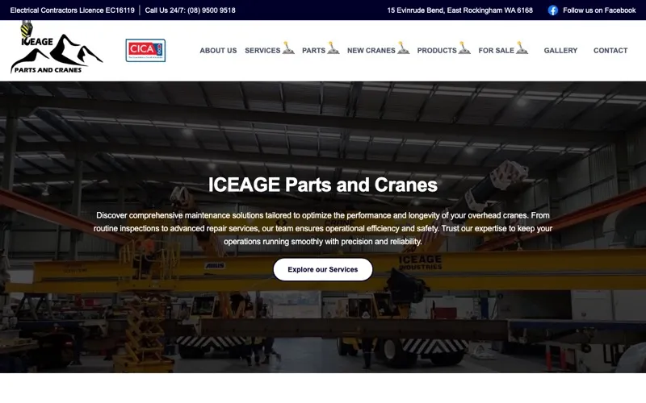
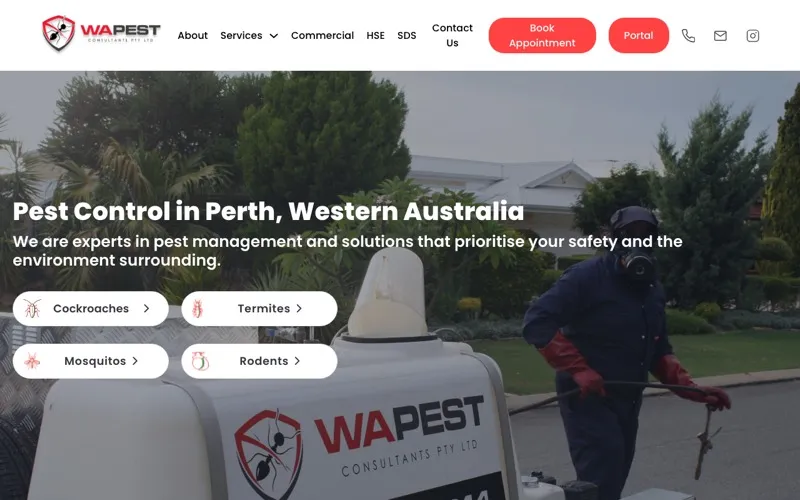
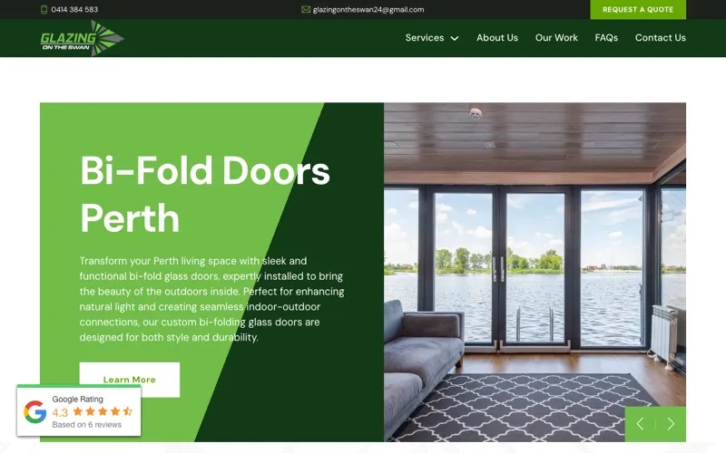
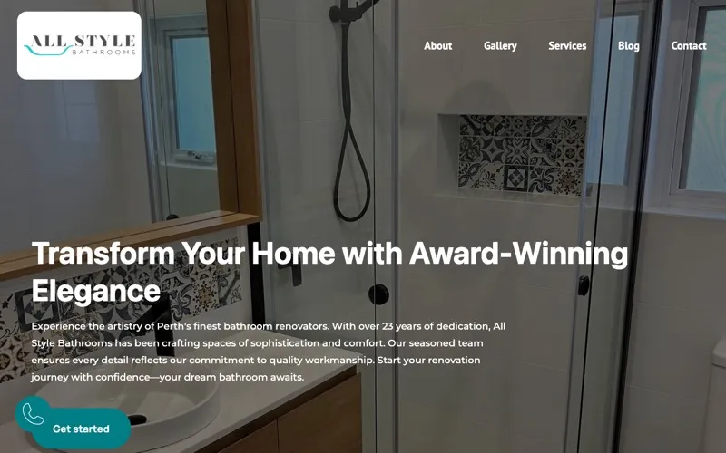
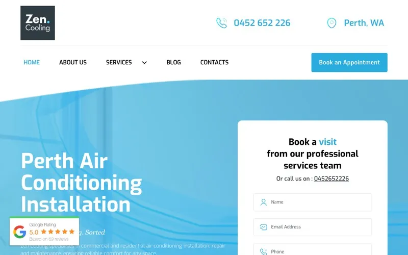
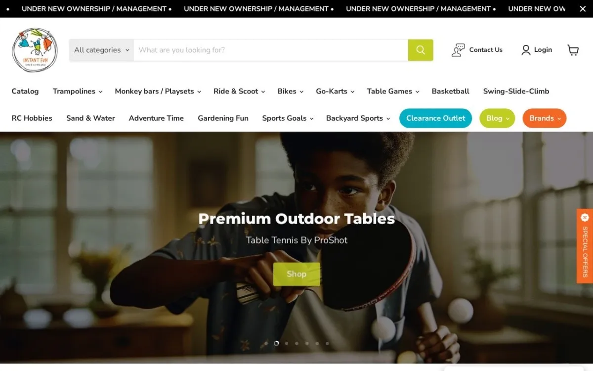

Perth, Western Australia
Most agencies make you a brochure. We make the business behind it impossible to ignore.
Scroll
The work
Fourteen live sites, mostly trades, across Perth and WA. We don’t publish the lot with logos and lorem-ipsum testimonials. Open the one that matches your trade and we’ll show you a glimpse. The rest we walk you through properly, on a call.

Rebuilt around the parts catalogue, because that’s what people actually phone about.

Two sites, same trade, different towns. Neither competes with the other on search.

Emergency work needed a phone number above the fold and nothing in its way.

A renovation is a considered purchase. The gallery does the convincing.

Built for the week in February when everyone’s aircon dies at once.

Hire and buy in one shop, without two checkouts confusing everybody.
Eight more we don’t show here. Ask about your trade.
Who you’d be working with
There isn’t a “we”. There’s me, and a build team I’ve worked with for years.
I’m Mike. Over a decade of this now, most of it for the businesses nobody writes case studies about. Air conditioning. Pest control. Glazing. Cranes. The ordinary ones, run by people who are very good at the thing they do and have no interest in becoming marketers on the side.
You deal with me. Not a salesperson who vanishes once the deposit clears, and not an account manager relaying your message to someone you’ll never meet. The design and development team sits in Vietnam, they’ve been with me for years, and they’re the reason the work costs what it costs.
I’ll also tell you when something isn’t worth doing. Half the jobs that come through here don’t need what the last agency sold them. That conversation is free, and it’s usually the most useful one we have.
Taking work
One person runs every project here, and that person is Mike. So the number we can take at once is small, and the ones we take are the ones we’d be proud to point at. If that sounds precious, it is. It’s also why the work looks like it does.
Start Website Discovery